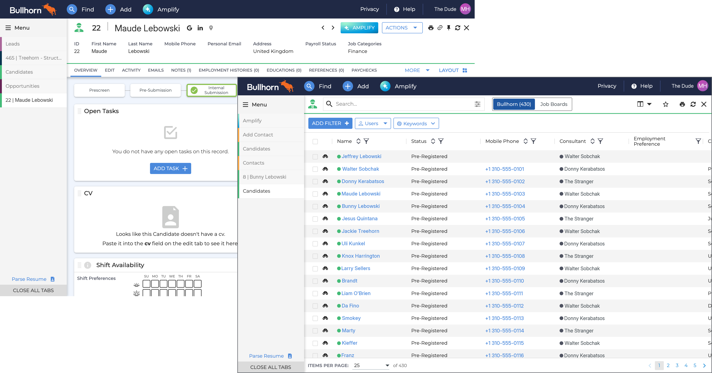
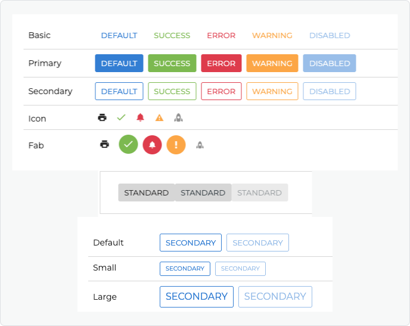
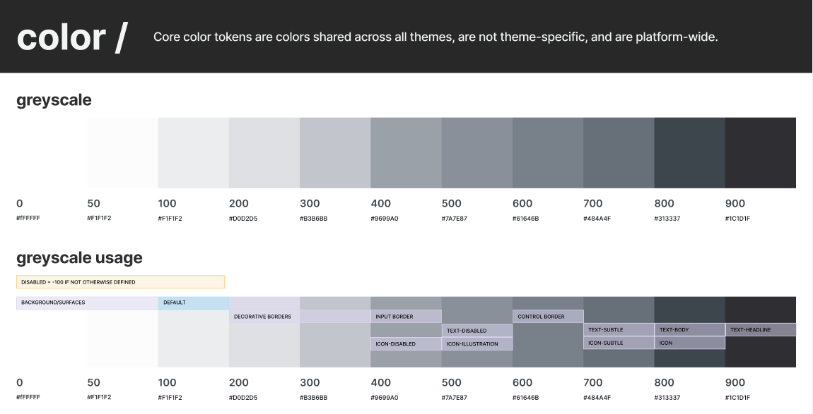
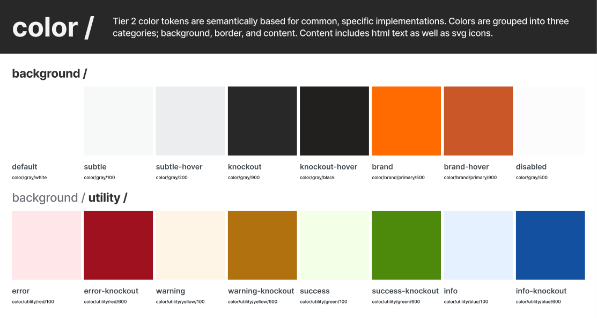
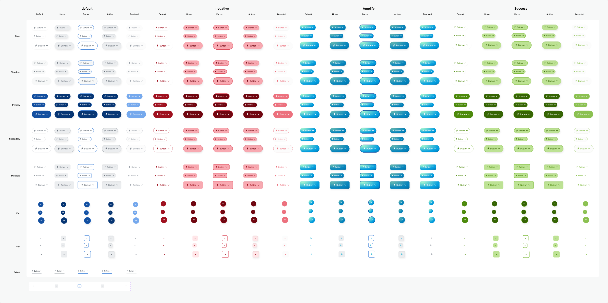
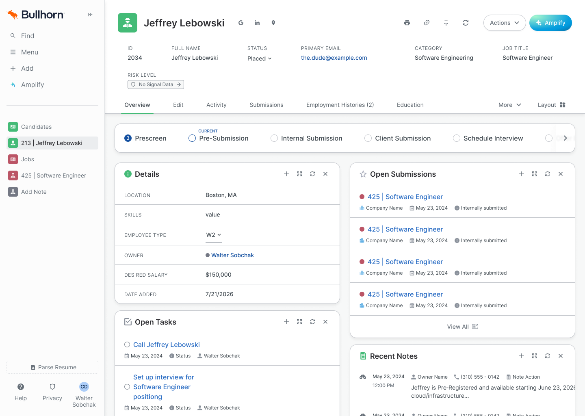
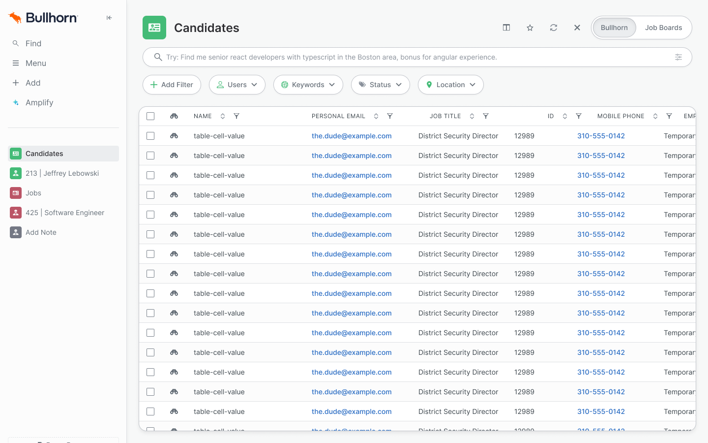

Applicants weren't finishing Terafina's account-opening flow.
View project
Bullhorn · Applicant tracking system
Bullhorn brought me in for three months to update how its applicant tracking system looked, across the whole platform. The candidate record and the candidate list came first, because recruiters use them most. Once I saw how many components sat under those screens, I proposed a token system, got engineering behind it, and spent the rest of the contract building it.

The candidate record is where a recruiter reads everything about one person. The candidate list is where they find that person in the first place. Those two get more use than anything else in the product, so they went first.
Three months is tight for a whole platform. It gets tighter once you find out how much each screen is standing on.
Neither screen is one layout. Different kinds of users see different versions of it, and features and content switch on and off depending on who's signed in and what their account is allowed to do. Every design had to hold up across all of those.
Then there were the components, and there were a lot of them. Some came from a separate legacy system. One of the libraries was about to start being tokenized anyway. There was no Figma library behind any of it, so the code was the only record of what anything was supposed to look like.
Take the button. Restyle it on two screens and the rest of the platform still needs the same decisions made again. Get it right at the atomic level and every screen that uses it improves with it. If you control the details, you get a lot more change for a lot less work.
The tokenization work that was about to start was the opening. If values were going to be pulled out of the code anyway, they could come out with names and a structure, and the candidate record and list could be the first screens built from them.

It was a basic one, a set of core values with a naming structure on top. The point was to have something real to react to rather than a slide about what a token system could be.
I worked through it with the engineers to see whether it could ride along with the work they already had planned instead of competing with it. It could. It went into the scope, and my job changed from designing screens to building the system every screen would be made from.
I think of it as the spice rack. Every
ingredient the system is allowed to cook with sits here, and
nothing gets added anywhere else. The file is called
subatomic, and it holds ninety-one core values, the
spacing steps and the colour ramps, and names like
color.background.subtle-hover that say what those
values are for. It exports from Figma as JSON, so engineering
reads the same file the designs are built from.
The core values carry four modes: a default, a warm variant and two brand themes. Components only ever point at names, so a theme is another column of values. Nobody has to duplicate a component to get one.


subtle-hover is color/gray/200.Putting the rule in the structure instead of a guideline means a junior developer can check it as easily as I can. Nobody has to be senior enough to have an opinion.
It also settles what happens when a component needs something the system doesn't have. The answer is a new named role. A raw number doesn't get in just this once.
The component layer covers everything Novo
already had, down to the sub-components. That came to more than
five hundred. Each one is named the way the code names it, so the
button in Figma is novo-button and nobody has to
translate between the file and the repo.
Its tokens follow one pattern: component,
property, variant, then role and state.
button.color.icon.content.hover reads as
exactly what it styles. Of the 903 component tokens, 889 point at
another name instead of a value.

Focus and disabled states are part of each component set from the first draft. Adding them after the fact means reopening every variant, and at five hundred components that's the kind of job that quietly never happens.
The library is built atoms up, the way atomic design describes. A button is an atom, a table row is built from atoms, and screens are built from those, so a fix at the bottom reaches every place it's used.


The designer is the worst person to judge whether a system landed, so I asked the engineer I'd worked with most closely what was different.
None of the answers are about how anything looks.
The team used existing components in whatever state they were in. The low-level ones hadn't changed in a few years.
Two teams and five developers now build from the Figma library, with more teams on the way.
Bullhorn already had tokens. What changed is that the new ones say what they're for, and those are what the team uses now.
Novo has about 90,000 lines of CSS. Adoption across that is small and growing, because every new piece of work uses the semantic tokens.
Three months doesn't finish a system this size. I'd rather name the gaps than leave them for someone to find.
Fourteen of the 903 component tokens still hold a raw number, mostly tooltip and popover max-widths. They're small, and they're the kind of leak that spreads if nobody names it.
"Small and growing" is the right direction and a weak baseline. Counting semantic-token declarations per build would turn it into a trend line.
I could have spent three months restyling two screens and left. They'd have drifted the same way the old ones did, and the rest of the platform would still be waiting its turn. Starting with the smallest pieces meant every screen after those two starts from the same place, and five developers now build from it instead of working it out.